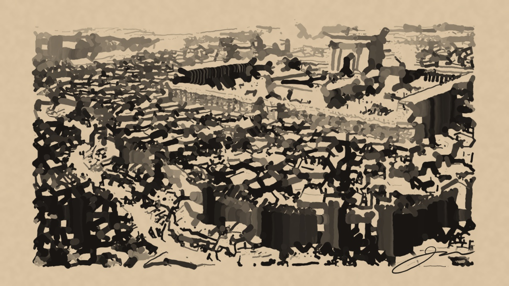
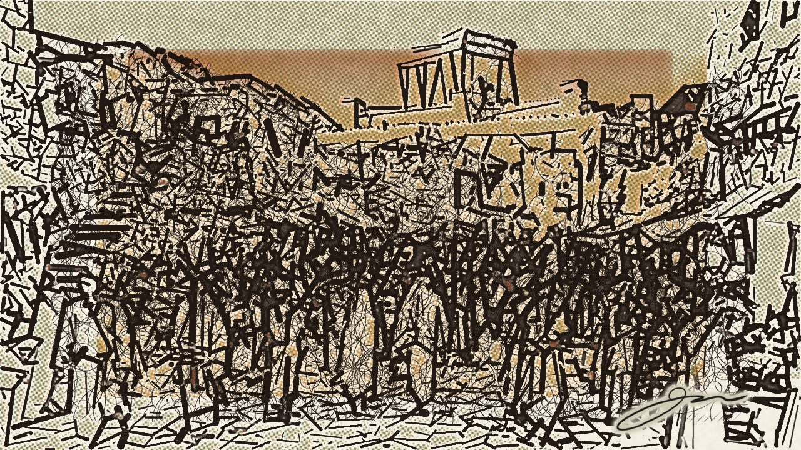
1. The “Ink-to-Life” Living Parchment Dissolve (Psalm 122:1–2)
Opens on the exact Frame-0 V1 Blotchy Ink-Wash Sketch with a parchment Scripture card, dissolves over 1.6 seconds into the live Google Flow Second Temple flight slowed to 50% optical speed, accompanied by ambient Temple strings and Sanctuary voiceover.
2. Triple 9:16 Vertical Extraction from One 16:9 Landscape Plate
Demonstrates how a single high-resolution 16:9 Google Flow clip simultaneously yields three completely different 9:16 vertical Shorts: (A) Kidron Olive Groves & Pilgrim Road, (B) Gilded Sanctuary & Altar Smoke, and (C) Dynamic Pan across the Jerusalem Gates.
3. OmniClip 9:16 Split-Screen Sanctuary Short (Luke 19:41)
Vertical 9:16 social format combining the live Jerusalem Marketplace Street tracking shot on top, the FHG Sanctuary Plain Chapter Overview (O2) with bronze superscript citations (¹, ²) in the center, and the matching V12 Non-Blotch Loop × Ukiyo-e Sketch on the bottom.
4. “Entering Jerusalem” Two-Shot Documentary Story (Macro → Micro)
Weaves both of your 4-second Google Flow clips and their Frame-0 sketches into a 14.5-second documentary arc: Ukiyo-e Temple Sketch → Live Temple Aerial Flight → Blotchy Marketplace Street Sketch → Live Marketplace Street Walk.
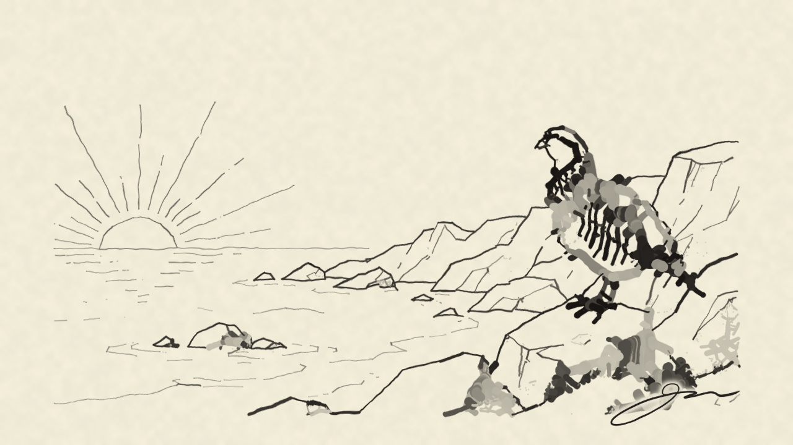
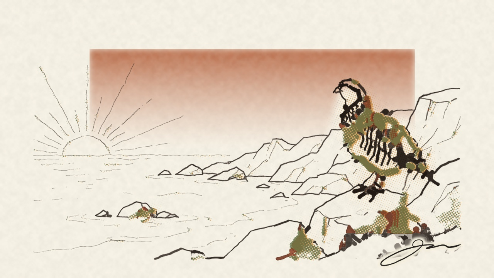
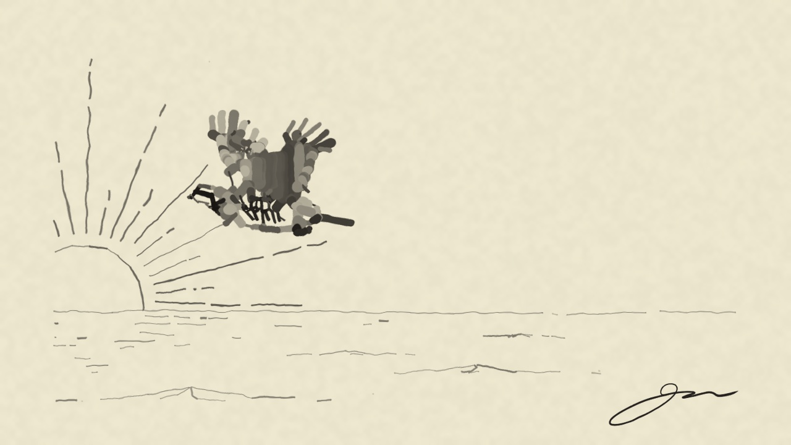
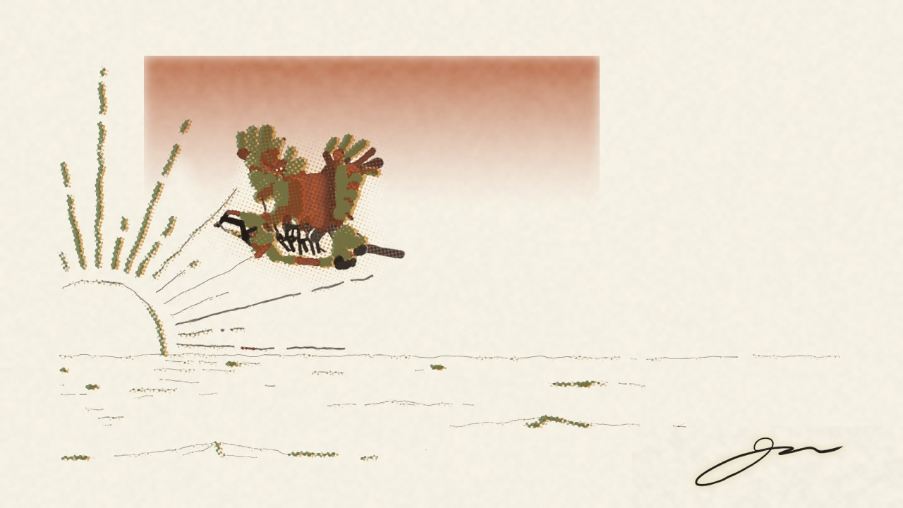
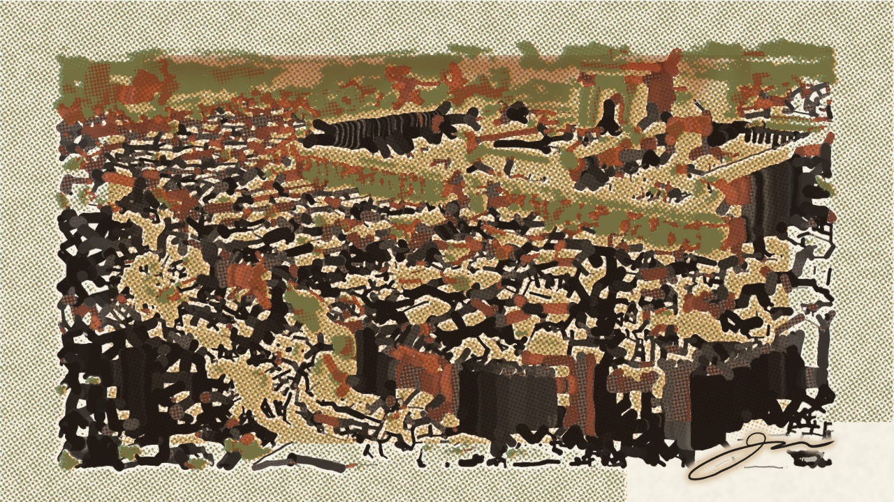
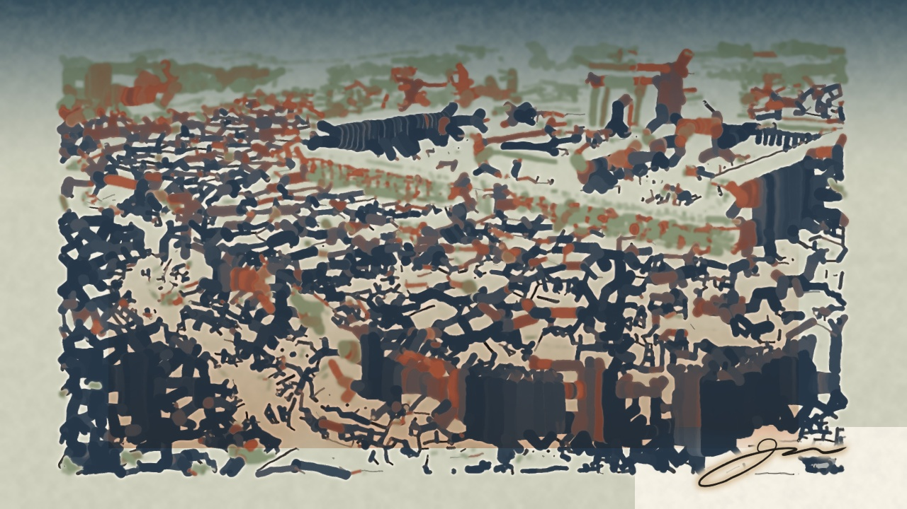
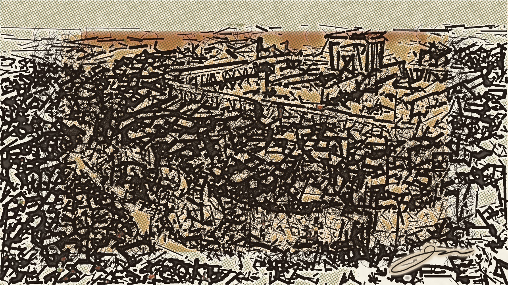
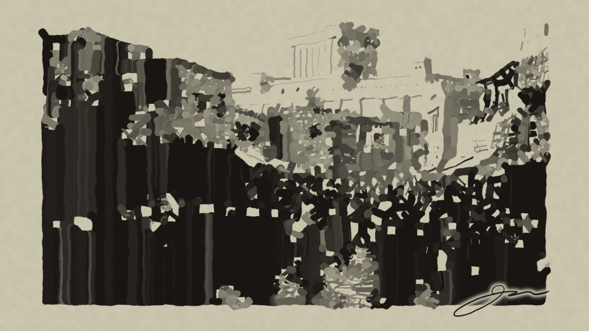
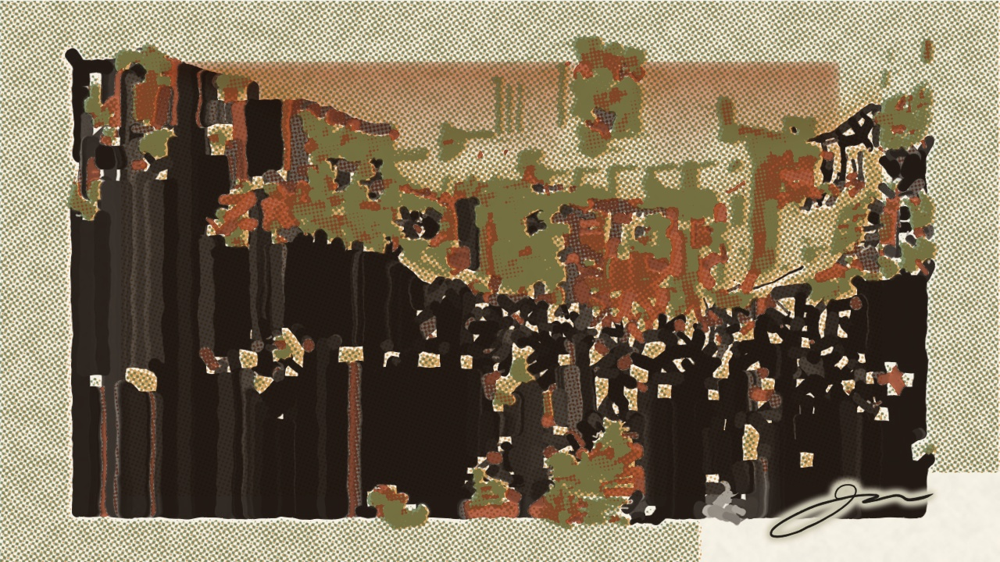
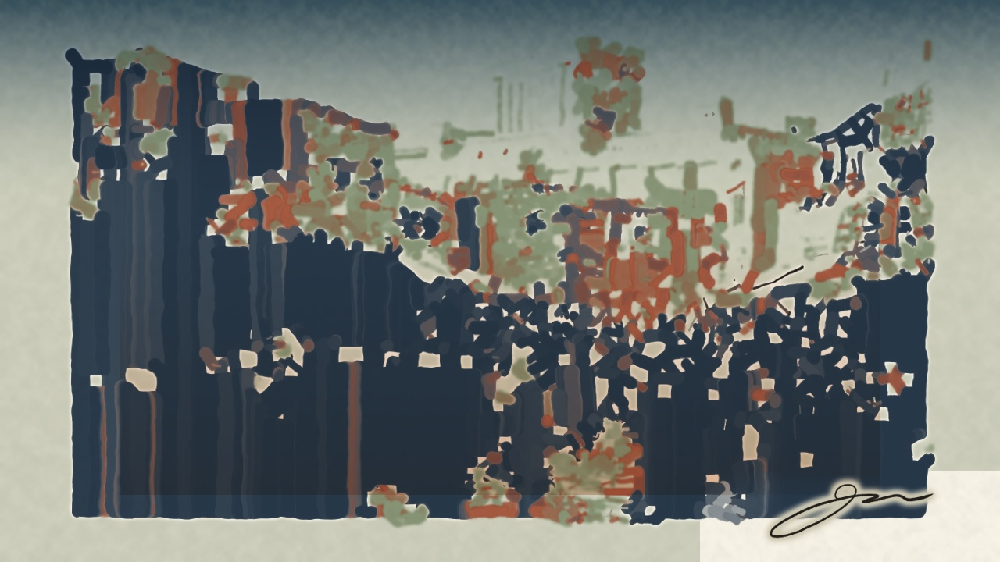